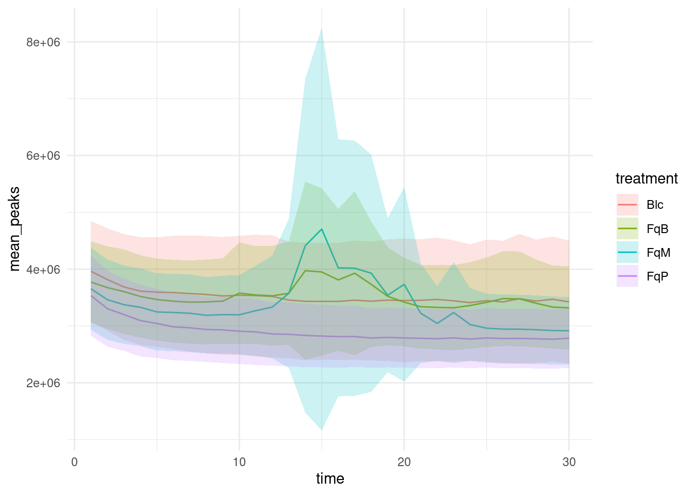

Sound Project
Purpose of the project
Visualize the pipeline analyses:
Total of 1655 mass.
Visualize the plot with summarized data per treatment (sum of all mass):
targets::tar_load(plot_summarized_data)
plot_summarized_data
And then for each mass:
# plots_list <- targets::tar_read(plot_summarized_data_per_mass)
#
# selected_plots <- plots_list
# selected_plots <- plots_list[c("61.993","78.98","183.35")]
# selected_plots <- plots_list[grep("180.|181.|182.", names(plots_list))]
# for (plot in selected_plots) {
# print(plot) # Afficher chaque graphique
# }Results from model with continuous time on the sum of all mass (base = Blc) :
targets::tar_load(model_comparison_time)
model_comparison_time$result_anovaAnalysis of Deviance Table (Type II Wald chisquare tests)
Response: get(response)
Chisq Df Pr(>Chisq)
time 6.3741 1 0.0115795 *
treatment 1.8706 3 0.5996918
nb_flowers 28.2731 1 1.053e-07 ***
time:treatment 18.4956 3 0.0003476 ***
---
Signif. codes: 0 '***' 0.001 '**' 0.01 '*' 0.05 '.' 0.1 ' ' 1model_comparison_time$result_summaryLinear mixed model fit by REML. t-tests use Satterthwaite's method [
lmerModLmerTest]
Formula: get(response) ~ time * treatment + nb_flowers + (1 | clean_names) +
(1 | temporal_bloc)
Data: formatted_table_reduced
REML criterion at convergence: 96065.2
Scaled residuals:
Min 1Q Median 3Q Max
-10.9738 -0.0549 -0.0104 0.0373 28.6666
Random effects:
Groups Name Variance Std.Dev.
clean_names (Intercept) 1.171e+13 3421876
temporal_bloc (Intercept) 0.000e+00 0
Residual 5.846e+12 2417815
Number of obs: 2964, groups: clean_names, 228; temporal_bloc, 2
Fixed effects:
Estimate Std. Error df t value Pr(>|t|)
(Intercept) 1.601e+06 6.585e+05 3.140e+02 2.431 0.015623 *
time -1.487e+04 2.374e+04 3.401e+18 -0.626 0.531124
treatmentFqB -8.624e+05 7.490e+05 3.871e+02 -1.151 0.250290
treatmentFqM -1.561e+06 7.565e+05 3.865e+02 -2.063 0.039758 *
treatmentFqP -7.989e+05 7.515e+05 3.876e+02 -1.063 0.288440
nb_flowers 9.228e+04 1.735e+04 2.230e+02 5.317 2.55e-07 ***
time:treatmentFqB 6.243e+04 3.343e+04 1.518e+19 1.868 0.061794 .
time:treatmentFqM 1.214e+05 3.372e+04 1.606e+19 3.601 0.000317 ***
time:treatmentFqP -3.484e+03 3.357e+04 7.575e+18 -0.104 0.917331
---
Signif. codes: 0 '***' 0.001 '**' 0.01 '*' 0.05 '.' 0.1 ' ' 1
Correlation of Fixed Effects:
(Intr) time trtmFB trtmFM trtmFP nb_flw tm:tFB tm:tFM
time -0.397
treatmntFqB -0.528 0.349
treatmntFqM -0.514 0.345 0.503
treatmntFqP -0.536 0.347 0.504 0.500
nb_flowers -0.592 0.000 -0.072 -0.087 -0.056
tm:trtmntFB 0.282 -0.710 -0.491 -0.245 -0.247 0.000
tm:trtmntFM 0.279 -0.704 -0.245 -0.490 -0.245 0.000 0.500
tm:trtmntFP 0.280 -0.707 -0.247 -0.244 -0.491 0.000 0.502 0.498
optimizer (nloptwrap) convergence code: 0 (OK)
boundary (singular) fit: see help('isSingular')Results from model with continuous time on the sum of all mass (base = FqB) :
targets::tar_load(model_comparison_time_fqb)
model_comparison_time_fqb$result_anovaAnalysis of Deviance Table (Type II Wald chisquare tests)
Response: get(response)
Chisq Df Pr(>Chisq)
time 6.3741 1 0.0115795 *
treatment 1.8706 3 0.5996918
nb_flowers 28.2731 1 1.053e-07 ***
time:treatment 18.4956 3 0.0003476 ***
---
Signif. codes: 0 '***' 0.001 '**' 0.01 '*' 0.05 '.' 0.1 ' ' 1model_comparison_time_fqb$result_summaryLinear mixed model fit by REML. t-tests use Satterthwaite's method [
lmerModLmerTest]
Formula: get(response) ~ time * treatment + nb_flowers + (1 | clean_names) +
(1 | temporal_bloc)
Data: formatted_table_reduced
REML criterion at convergence: 96065.2
Scaled residuals:
Min 1Q Median 3Q Max
-10.9738 -0.0549 -0.0104 0.0373 28.6666
Random effects:
Groups Name Variance Std.Dev.
clean_names (Intercept) 1.171e+13 3421876
temporal_bloc (Intercept) 0.000e+00 0
Residual 5.846e+12 2417815
Number of obs: 2964, groups: clean_names, 228; temporal_bloc, 2
Fixed effects:
Estimate Std. Error df t value Pr(>|t|)
(Intercept) 7.383e+05 6.881e+05 3.026e+02 1.073 0.2842
time 4.757e+04 2.353e+04 3.564e+18 2.021 0.0433 *
treatmentBlc 8.624e+05 7.490e+05 3.871e+02 1.151 0.2503
treatmentFqM -6.985e+05 7.505e+05 3.883e+02 -0.931 0.3526
treatmentFqP 6.354e+04 7.472e+05 3.883e+02 0.085 0.9323
nb_flowers 9.228e+04 1.735e+04 2.230e+02 5.317 2.55e-07 ***
time:treatmentBlc -6.243e+04 3.343e+04 1.638e+19 -1.868 0.0618 .
time:treatmentFqM 5.899e+04 3.358e+04 1.735e+19 1.757 0.0789 .
time:treatmentFqP -6.592e+04 3.343e+04 8.018e+18 -1.972 0.0486 *
---
Signif. codes: 0 '***' 0.001 '**' 0.01 '*' 0.05 '.' 0.1 ' ' 1
Correlation of Fixed Effects:
(Intr) time trtmnB trtmFM trtmFP nb_flw tm:trB tm:tFM
time -0.376
treatmntBlc -0.583 0.346
treatmntFqM -0.525 0.345 0.491
treatmntFqP -0.548 0.346 0.495 0.493
nb_flowers -0.645 0.000 0.072 -0.016 0.016
tm:trtmntBl 0.265 -0.704 -0.491 -0.243 -0.244 0.000
tm:trtmntFM 0.264 -0.701 -0.242 -0.492 -0.243 0.000 0.493
tm:trtmntFP 0.265 -0.704 -0.243 -0.243 -0.492 0.000 0.496 0.493
optimizer (nloptwrap) convergence code: 0 (OK)
boundary (singular) fit: see help('isSingular')Results from model with continuous time on the sum of all mass (base = FqP) :
targets::tar_load(model_comparison_time_fqp)
model_comparison_time_fqp$result_anovaAnalysis of Deviance Table (Type II Wald chisquare tests)
Response: get(response)
Chisq Df Pr(>Chisq)
time 6.3741 1 0.0115795 *
treatment 1.8706 3 0.5996918
nb_flowers 28.2731 1 1.053e-07 ***
time:treatment 18.4956 3 0.0003476 ***
---
Signif. codes: 0 '***' 0.001 '**' 0.01 '*' 0.05 '.' 0.1 ' ' 1model_comparison_time_fqp$result_summaryLinear mixed model fit by REML. t-tests use Satterthwaite's method [
lmerModLmerTest]
Formula: get(response) ~ time * treatment + nb_flowers + (1 | clean_names) +
(1 | temporal_bloc)
Data: formatted_table_reduced
REML criterion at convergence: 96065.2
Scaled residuals:
Min 1Q Median 3Q Max
-10.9738 -0.0549 -0.0104 0.0373 28.6666
Random effects:
Groups Name Variance Std.Dev.
clean_names (Intercept) 1.171e+13 3421876
temporal_bloc (Intercept) 0.000e+00 0
Residual 5.846e+12 2417815
Number of obs: 2964, groups: clean_names, 228; temporal_bloc, 2
Fixed effects:
Estimate Std. Error df t value Pr(>|t|)
(Intercept) 8.018e+05 6.842e+05 3.055e+02 1.172 0.242145
time -1.835e+04 2.374e+04 3.375e+18 -0.773 0.439475
treatmentBlc 7.989e+05 7.515e+05 3.876e+02 1.063 0.288440
treatmentFqB -6.354e+04 7.472e+05 3.883e+02 -0.085 0.932272
treatmentFqM -7.621e+05 7.541e+05 3.881e+02 -1.011 0.312822
nb_flowers 9.228e+04 1.735e+04 2.230e+02 5.317 2.55e-07 ***
time:treatmentBlc 3.484e+03 3.357e+04 1.509e+19 0.104 0.917331
time:treatmentFqB 6.592e+04 3.343e+04 1.507e+19 1.972 0.048608 *
time:treatmentFqM 1.249e+05 3.372e+04 7.641e+18 3.704 0.000212 ***
---
Signif. codes: 0 '***' 0.001 '**' 0.01 '*' 0.05 '.' 0.1 ' ' 1
Correlation of Fixed Effects:
(Intr) time trtmnB trtmFB trtmFM nb_flw tm:trB tm:tFB
time -0.382
treatmntBlc -0.583 0.347
treatmntFqB -0.541 0.349 0.500
treatmntFqM -0.526 0.346 0.495 0.500
nb_flowers -0.631 0.000 0.056 -0.016 -0.032
tm:trtmntBl 0.270 -0.707 -0.491 -0.247 -0.245 0.000
tm:trtmntFB 0.271 -0.710 -0.247 -0.492 -0.246 0.000 0.502
tm:trtmntFM 0.269 -0.704 -0.245 -0.246 -0.492 0.000 0.498 0.500
optimizer (nloptwrap) convergence code: 0 (OK)
boundary (singular) fit: see help('isSingular')